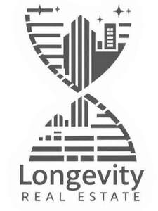

Trade Mark Journal No.2025/013 28 March 2025
UK00004168749 4 March 2025 (35,36,42)

- Class 35
- Market intelligence services; providing market intelligence services; market research and market analysis; market analysis services; competitive intelligence services; market forecasting; market research; business and market research; business intelligence services; business administration services in the fields of healthcare, wellness and longevity; competitive intelligence services; business analysis and collection of relevant information about competitor companies, including their business model, market, and marketing strategy; compilation of statistics, collection, processing, and presentation of longevity technologies related data in an easily interpretable form for further analysis and trend determination; arranging and conducting of commercial events; conducting different paid events in the fields of wellness focused real estate; business analysis research and information services using artificial intelligence and machine learning software in the field of wellness focused real estate; advertising; advertising via electronic media and specifically the internet; business intermediary services relating to the matching of various professionals with clients; business intermediary services relating to the matching of potential private investors with entrepreneurs needing funding; providing business information via a website; provision of computerised business information data; providing commercial information and advice for consumers in the choice of products and services; provision of an online marketplace for buyers and sellers of goods and services; provision of an online marketplace for buyers and sellers of goods and services, related to the wellness focused real estate promotion; negotiation and conclusion of commercial transactions for third parties; providing information and analysis in the fields of investments and business; sales promotion for others; data collection [for others]; interpretation of market research data; negotiation and conclusion of commercial transactions for third parties; business intermediary services relating to the matching of various products and services in the wellness focused real estate sphere with clients; advertising of the services in the healthcare, wellness and wellness focused real estate spheres of other vendors, enabling customers to conveniently view and compare the services of those vendors; the bringing together, for the benefit of others, of a variety of healthcare, wellness and wellness focused real estate services and/or products, enabling consumers to conveniently compare and purchase those services and/or products; compilation of statistical data relating to wellness real estate.
- Class 36
- Real estate investment; leasing of real estate; management of real estate; brokerage of real estate; rental of real estate; real estate agency; real estate consultancy; real estate investment planning; real estate investment advice; real estate services; wellness real estate; private health insurance; financial management of real estate projects; real estate management services relating to residential buildings; residential real estate agency services commercial property investment services; residential investment advice; portfolio investment management; financial investment; financial investment advisory services; financial investment management services; monitoring of investment funds; financial investment research services; financial brokerage; financial investment brokerage; financial exchange services; financial information for investors; financial market information services; financial information and evaluations; preparation and analysis of financial reports; processing of payments; insurance services; insurance brokerage; insurance for businesses; insurance agencies; life insurance brokerage; private health insurance; health insurance; medical insurance; insurance research; insurance claim settlements; insurance information and consultancy services; financial analysis; evaluating projects and businesses of any nature regarding their returns, risk, and suitability for making an informed decision on financial resources allocation; financial consultancy; advising on acquiring, selling, partnering with, or funding a business, management, and strategic advice, scientific and technical due diligence; financial research; financial analysis of a business, industry, sector, or country to give a conceptual perspective of its economic state, develop financial models useful to draw future performance scenarios, and manage risks; investment of funds; investments in different disruptive technologies-oriented companies; investment in structured financial products and other financial instruments; healthcare, wellness and wellness focused real estate cost management; management of wellness focused real estate for others.
- Class 42
- Scientific analysis; scientific research; scientific risk assessment; scientific advisory services; scientific testing services; scientific research services in the fields of healthcare, wellness and longevity; preparation of scientific reports in the fields of healthcare, wellness and longevity; scientific research and analysis in the fields of healthcare, wellness and longevity; scientific and industrial research in the fields of healthcare, wellness and longevity; scientific research conducted using databases; electronic storage of data related to healthcare, wellness and longevity; computer services for the analysis of data; compression of data for electronic storage; design and development of systems for data input, output, processing, display and storage; data storage via blockchain; development of systems for the processing of data; development of databases related to healthcare, wellness and longevity; development and maintenance of interactive software relating to healthcare, wellness and longevity; software as a service (SaaS) related to healthcare, wellness and longevity; platform as a service (PaaS) related to healthcare, wellness and longevity; data as a service (DaaS) related to healthcare, wellness and longevity; software as a service (SaaS) services featuring software for machine learning, deep learning and deep neural networks; platform as a service (PaaS) services featuring software for machine learning, deep learning and deep neural networks; platforms for artificial intelligence as software as a service (SaaS); artificial intelligence as a service (AIaaS); artificial intelligence as a service (AIaaS) related to healthcare, wellness and longevity; design and development of computer software for use with medical technology; providing user authentication services using single sign-on technology for online software applications; consultancy and information services in the fields of information technology architecture and infrastructure; creating and designing website-based indexes of information for others; design and development of computer software and software architecture in the field of Big Data; providing temporary use of non-downloadable software relating to healthcare, wellness and longevity; technological research; technological project studies; technological advisory services; technological consultation services; technological project studies; technical research relating to healthcare, wellness and longevity; design and development of computer software for evaluation and calculation of data; development of interactive multimedia software; research in the field of data processing technology; electronic data storage services; development of databases relating to health, politics, economics, finance, insurance, education, government, culture, current affairs, artificial intelligence, science, medicine, space medicine, biotechnology, agetech, healthtech, deeptech, geroscience, neurotech, wellness, fitness, healthcare and longevity data; data mining; design and development of virtual reality software; providing temporary use of on-line non-downloadable software for uploading, downloading, displaying, streaming and sharing information, podcasts, data, sound, images, audio and video contents by users; artificial intelligence consultancy; research in the field of artificial intelligence; technology consultation in the field of artificial intelligence; providing artificial intelligence computer programs on data networks; information technology services for the pharmaceutical and healthcare industries; medical laboratory services; medical research services; research in the field of gene therapy; laboratory research in the field of gene expression; research and development services in the field of gene expression systems; genetic fingerprinting; genetic research; genetic mapping for scientific purposes; genetic engineering services; analysis in the field of molecular biology; genetic engineering services relating to plants; biological analysis; scientific research in the field of genetics; research and development in the field of microorganisms and cells; design and development of computer software for use with medical technology; computer programming in the medical field; scientific research in the field of social medicine; information technology services for the pharmaceutical and healthcare industries; services for the planning of residential communities; planning and design of residential communities; industrial development services; design services relating to residential property; architectural services for the design of industrial buildings; architectural services for the design of commercial buildings; building design services; design services relating to real estate.
AGING ANALYTICS LTD